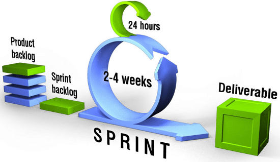

Scrum es un proceso de gestión y control que reduce la complejidad en el desarrollo de productos para satisfacer las necesidades de los clientes. La gerencia y los equipos de Scrum trabajan juntos alrededor de requisitos y tecnologías para entregar productos funcionando de manera incremental usando el empirismo. Scrum es un marco de trabajo simple que promueve la colaboración en los equipos para lograr desarrollar productos complejos. Ken Schwaber y Jeff Sutherland han escrito La Guía Scrum para explicar Scrum de manera clara y simple.

El Marco Scrum
Scrum es simple, no es una gran colección de partes y componentes obligatorios definidos de manera prescriptiva. Scrum no es una metodología, Scrum está basado en un modelo de proceso empírico. con respeto a las personas y basado en la auto-organización de los equipos para lidiar con lo imprevisible y resolver problemas complejos inspeccionando y adaptando continuamente. El siguiente gráfico representa Scrum como lo describen Ken Schwaber y Jeff Sutherland en su libro Software en 30 Días.

Los Eventos Scrum
Los eventos de Scrum se utilizan para minimizar la necesidad de reuniones no definidas en Scrum y establecer una cadencia que permita al equipo fomentar la comunicación y colaboración reduciendo el tiempo en reuniones extensas además de reducir los procesos restrictivos y predictivos. Todos los eventos tienen una caja de tiempo o “TimeBox”. Una vez que se inicia un Sprint este tiene una duración fija y no se puede acortar o alargar. Los siguientes eventos pueden terminar siempre que se logre el propósito del evento, pero dentro de la caja de tiempo y asegurando el fomento de la transparencia. Los eventos de Scrum son:

- Sprint
- Sprint Planning
- Daily Scrum
- Sprint Review
Artefactos Scrum
Los artefactos de Scrum formas para proveer transparencia y oportunidades de inspección y adaptación. Los artefactos definidos por Scrum están específicamente definidos para fomentar la transparencia de la información de tal manera que todos tengan el mismo entendimiento de lo que se está llevando a cabo a través de los artefactos. Los artefactos Scrum son:
- Product Backlog
- Sprint Backlog
- Increment